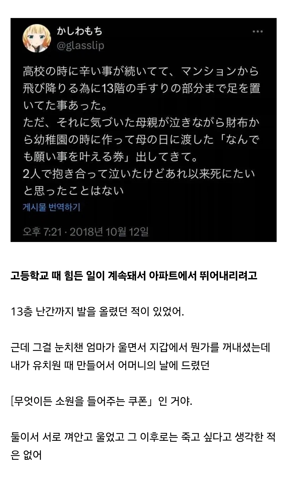

74 · 22 · 12 시간 전 · 원문

수집 당시 댓글 22개
0167A0 · 19 시간 전
김정은 · 18 시간 전
댕멍꿀꿀 · 18 시간 전
비크 · 14 시간 전
BigJay · 13 시간 전
엄마 ㅠㅠㅠㅠㅠ
상이프로 · 13 시간 전
와 눈물샘터짐..
헤일하이드라 · 13 시간 전
다시 소원권을 지갑에 넣으며...
↳ 답글 · 오늘부터우리는 · 13 시간 전
어머니 1회용 입니다...
삐뚤어진아이 · 13 시간 전
유치원때 기억이 나나
↳ 답글 · 지랄쌈싸먹기 · 13 시간 전
나지 3살때 단편적인 기억도 남 나는
↳ 답글 · 딜레탕트 · 9 시간 전
난 유치원생 때 엄마 손잡고 가면서 카레먹고 싶다는 얘기했던거 어떤 건물 옆이었고 붉은색 벽돌이 인상깊었던것도 기억남
누골 · 13 시간 전
진짜 이거 볼때마다 바로 눈물나옴..
콤플리트 · 13 시간 전
사용기한이...
닉네임팬 · 13 시간 전
팩트) 저렇게 부모한테 사랑받는 자식이면 애초에 자살생각을 안한다
↳ 답글 · 악덕팬더 · 13 시간 전
그야 트위터 주작이니까...
↳ 답글 · 성상품화개좋음 · 13 시간 전
그건 아님
↳ 답글 · 미니유리 · 13 시간 전
2011년 대구 수성구 중학생 투신 사망 사건 - 나무위키 https://share.google/jsZcZvbak4ksxHxbY유서보면 가족간에 사랑은 있는것 같은데...
↳ 답글 · 보영Prak · 12 시간 전
쌉소리여... 외부요인으로 자살한사람이 얼마나 많은디
↳ 답글 · 자본주의 · 8 시간 전
구태여 멍청한 소릴해서 욕을 먹는 타입
↳ 답글 · 칼라바리스타 · 4 분 전
팩트: 이사람은 멍청이다.
양진이 · 12 시간 전
개듸리퍼 · 10 시간 전
소원은 아파트한채야 약속은 지키고 가
댓글
수집 당시 댓글 22개
0167A0 · 19 시간 전
김정은 · 18 시간 전
댕멍꿀꿀 · 18 시간 전
비크 · 14 시간 전
BigJay · 13 시간 전
엄마 ㅠㅠㅠㅠㅠ
상이프로 · 13 시간 전
와 눈물샘터짐..
헤일하이드라 · 13 시간 전
다시 소원권을 지갑에 넣으며...
· 오늘부터우리는 · 13 시간 전
어머니 1회용 입니다...
삐뚤어진아이 · 13 시간 전
유치원때 기억이 나나
· 지랄쌈싸먹기 · 13 시간 전
나지 3살때 단편적인 기억도 남 나는
· 딜레탕트 · 9 시간 전
난 유치원생 때 엄마 손잡고 가면서 카레먹고 싶다는 얘기했던거 어떤 건물 옆이었고 붉은색 벽돌이 인상깊었던것도 기억남
누골 · 13 시간 전
진짜 이거 볼때마다 바로 눈물나옴..
콤플리트 · 13 시간 전
사용기한이...
닉네임팬 · 13 시간 전
팩트) 저렇게 부모한테 사랑받는 자식이면 애초에 자살생각을 안한다
· 악덕팬더 · 13 시간 전
그야 트위터 주작이니까...
· 성상품화개좋음 · 13 시간 전
그건 아님
· 미니유리 · 13 시간 전
2011년 대구 수성구 중학생 투신 사망 사건 - 나무위키 https://share.google/jsZcZvbak4ksxHxbY
유서보면 가족간에 사랑은 있는것 같은데...
· 보영Prak · 12 시간 전
쌉소리여... 외부요인으로 자살한사람이 얼마나 많은디
· 자본주의 · 8 시간 전
구태여 멍청한 소릴해서 욕을 먹는 타입
· 칼라바리스타 · 4 분 전
팩트: 이사람은 멍청이다.
양진이 · 12 시간 전
개듸리퍼 · 10 시간 전
소원은 아파트한채야 약속은 지키고 가